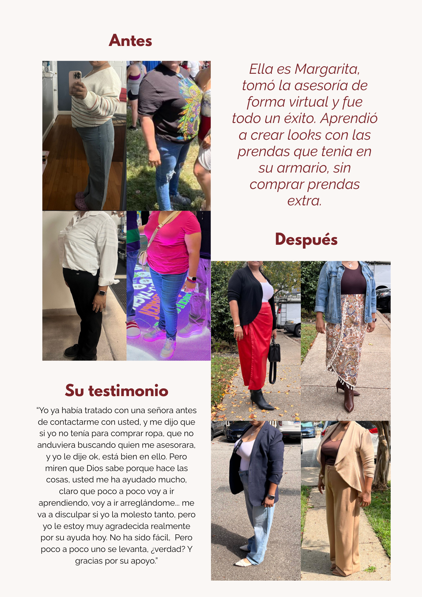

Lo que dicen mis clientas
Más de 700 mujeres han transformado su imagen conmigo. Aquí algunos de sus testimonios.

Imagen 1 / 10
"Ver la transformación de cada mujer es mi mayor satisfacción. Gracias por confiar en mí para potenciar su imagen y autoestima."
— Camila Caballero